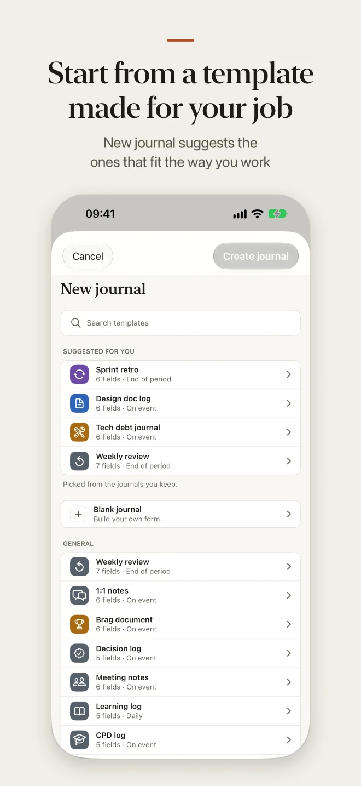
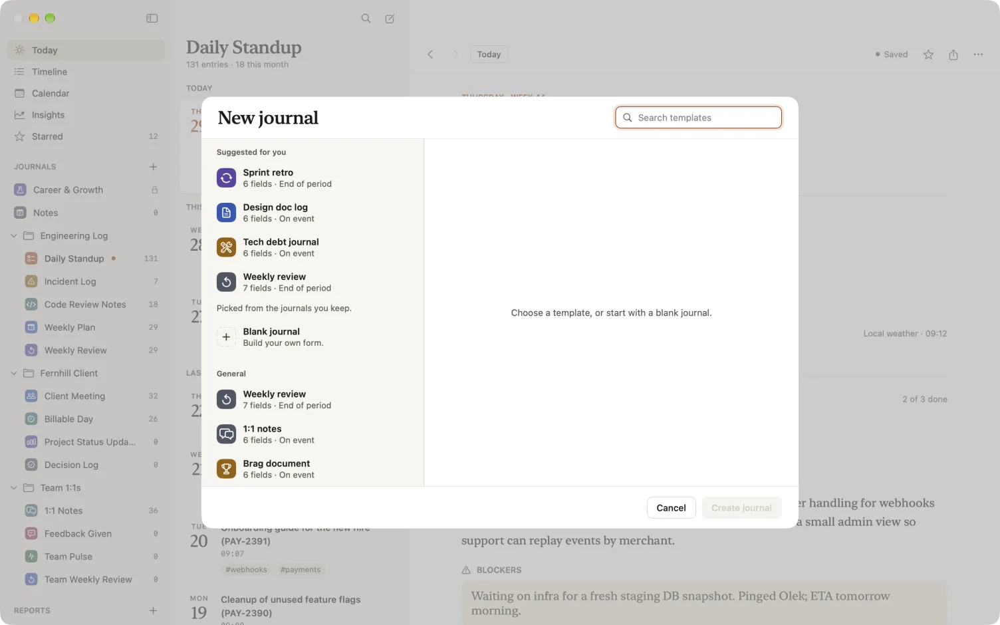
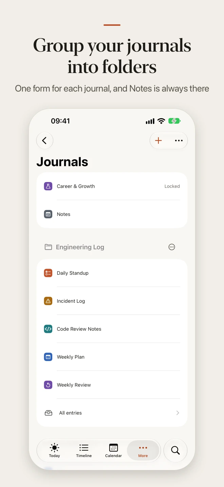
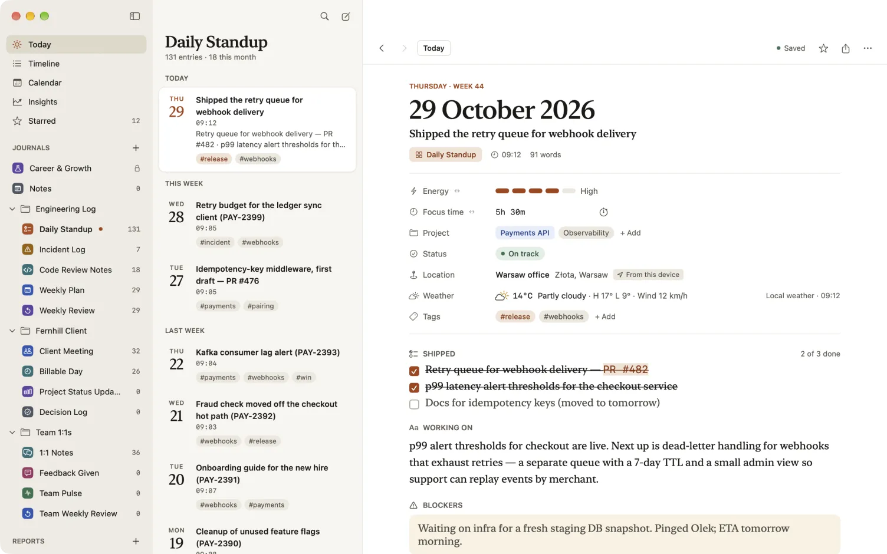
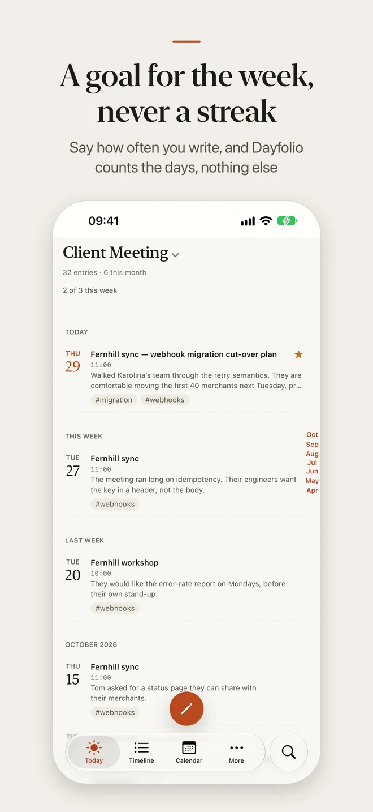
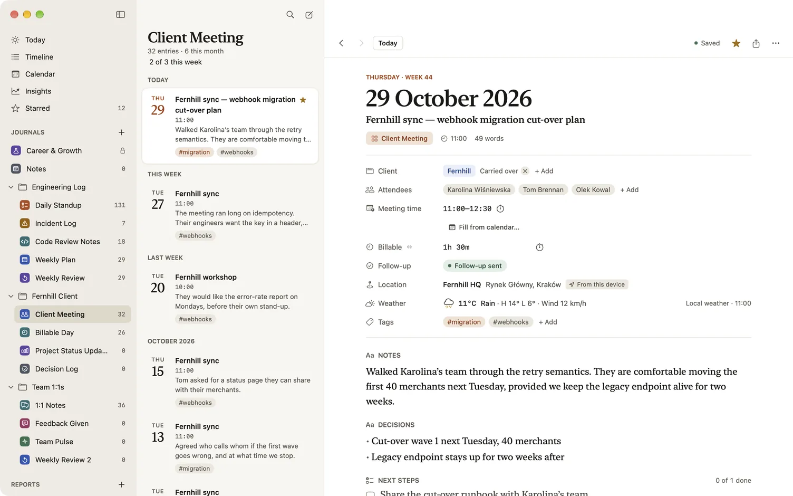

Journals, folders and goals
A Dayfolio journal is one kind of page you write: a daily standup, a weekly 1:1, a client’s meetings, a career log. Each journal has exactly one template, its form: the fields every entry in it starts with. Because a form belongs to its journal alone, you can change it as you like without touching another journal. This page covers making journals, grouping them in folders, choosing what Today shows, the optional weekly goal, and undoing a delete.
Make a journal from a template
- Open New journal.
- On a Mac: choose + beside Journals in the sidebar, or File › New journal….
- On iPhone and iPad: go to More › Journals and tap +.
- Choose a template. The list opens with Suggested for you: up to four templates chosen from the kind of work your first page heard and from the journals you keep, and never one you already have a journal for. Under it come Blank journal and the library’s templates by pack, with a search field. All 75 templates in 16 packs stay reachable, and the template gallery shows each one.
- The journal takes the template’s name, icon and colour, and shows the form’s fields. Change the name if you like.
- Under Starts with, the defaults appear as switches, each with a line saying what it does: Location and weather (off), the template’s suggested reminder, and its suggested weekly goal. Each starts off, and you can change it now or later in Journal settings.
- Choose Create. The journal opens, with its own form.


Make the same template again, for a second client or project, and the new journal is numbered: “Client meeting 2”, then “Client meeting 3”. Each is a separate journal with its own form. Blank journal starts from one writing field and opens the form editor, so you can build the form straight away. To start from a journal you already have, choose Duplicate journal in its settings or, on a Mac, in its menu in the sidebar. The copy has the same form, colour, icon, lock and goal, none of the entries, and sits right after the original.
Notes
Notes is a journal that is always there, for everything that has no form of its own: a thought, a link, something captured from another app. It can’t be deleted or archived, and its form, one writing field and Tags, can’t be edited. You can rename it, lock it, move it into a folder and give it reminders like any other journal.
Quick capture goes to Notes when it has nowhere better to go. If you capture into a journal whose form has no writing field for the text, or nothing for a file, Dayfolio saves it in Notes and says so (“Saved in Notes”), so nothing you typed is lost. See Quick capture.
Change a journal’s form
A form is edited from its journal. Open the journal’s settings and, under Form, choose Edit form…. See Journals, forms and fields for the fields and what a change affects. Because the form is the journal’s own, the journal’s name, icon and colour are also its form’s.
Group journals in folders
A folder groups journals in the sidebar, one level deep. Folders are optional: a new journal starts outside any folder, and the loose journals come first in the list, then the folders. A folder holds journals, never other folders, and a journal is in one folder at most. A folder has a name and nothing else: no settings, no lock, no reminders. Lock, location and weather, reminders and goals stay with each journal, and a folder never opens a locked journal.
- On a Mac: choose + beside Journals and then New folder, or File › New folder. Drag a journal onto a folder, or out of it, and drag to reorder. Rename a folder in place. A journal’s menu in the sidebar has Move to folder, with New folder… and Remove from folder.
- On iPhone and iPad: More › Journals lists the loose journals and the folders. Open a folder to see its journals. Choose Edit to reorder, and to make a folder, move a journal into one, rename a folder or delete one. On an iPad, each folder is a section of the sidebar, titled with its name.
Choose a folder to read all its journals together, newest first, each row naming its journal. Archived journals are left out of the combined list, and so is a locked journal until you unlock it. Reports and Search can be narrowed to a folder, so “everything I wrote for this client” is one choice. A report’s folder is read when the report is made, so a journal you add to the folder later is in the next one.



Delete a folder
Deleting a folder asks nothing, because it can be undone. Its journals, archived ones too, become loose, after the others, and a message says “Deleted folder “Work”. Its 3 journals are loose now.” with Undo. Undo brings the folder back where it was, with each journal that has not moved since. A folder holds no entries, so deleting one never deletes a journal or an entry.
Choose what Today shows
Today shows your current journal and its page for today. If you keep several journals, you can have Today show a set of them instead. In Settings › General › Today, choose These journals and tick the ones you want. The choice stays on that device and doesn’t sync.
Today then lists those journals’ entries together, newest first, and opens the latest one written today. Its start card has a button for each journal you haven’t written for its period: “Start today’s standup”, “Start this week’s review”, or “Open this week’s review” when this week’s is already written. A journal that a lock hides is left out until you unlock it.
Set a weekly goal
A weekly goal is optional, and it is off until you set one. Open a journal’s settings, go to General and choose Set a goal…: “N times a week”, from once to seven, or particular weekdays.
- It counts days, not entries. A day on which you wrote in the journal counts once, so three 1:1s on Monday are one day. For a goal of chosen weekdays, any day counts toward its number, so a Saturday makes up for a missed Friday.
- It reads “2 of 3 this week.” The count shows under the journal’s title and on Today’s start card, and reads “Goal reached this week” once you get there. Nothing animates and nothing makes a sound.
- There are no streaks. A week you miss simply starts a new one. Dayfolio keeps no history of past weeks, shows nothing in red and never says you missed. Your entry count is unchanged either way.
- It can pause or stop. A paused goal shows only in Journal settings, with Resume and Turn off.
- It follows the lock. A goal counts the journal’s entries, so a journal that a lock hides shows no goal line until you unlock it.
Some templates suggest a goal, offered once as a switch in New journal and then in Journal settings until you set it or dismiss it: daily work such as a standup suggests weekdays, a weekly review or 1:1 notes suggests once a week, and a template for things that happen on an event, such as incident notes, suggests none. The template gallery shows each template’s suggestion.


Make it yours
For its first week, after you keep your first page, Today shows a card, “Make it yours”, that starts at “1 of 4”: your first entry, set a reminder, add another journal and group journals in a folder. Each step ticks when the thing exists, and each can be skipped. Skipping one takes it off the card and the count, and never counts as done. Hide removes the card for good, and it goes by itself when every step is done or seven days after your first entry. It appears only on a device where you made your first entry on the first page, and never when you restored or synced journals that already existed.
Undo a delete
Deleting an entry says “Moved to Recently deleted” with Undo, which puts it back. After a few seconds the message goes, and the entry stays in Recently deleted for 30 days, where Restore brings it back. Deleting a folder offers Undo the same way, as above.